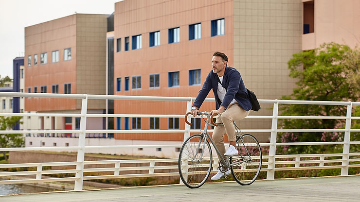
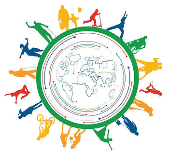

Entrevistamos os professores doutores Bruno Avelar Rocha(PT) e Ricardo Picoli (BR) sobre o curso que vão ministrar no dia 27/3 para saber um pouco mais do que será abordado.
O curso “Políticas públicas e inatividade física: aspectos relacionados à adesão e aderência às atividades”,encerra a 1ª Temporada de Cursos de Verão da Associação Brasileira de Psicologia do Esporte – ABRAPESP, no próximo sábado das 13 as 16 horas.
O que você espera apresentar neste curso?
Professor Bruno – Basicamente as diretrizes da Organização Mundial da Saúde (OMS)* . Assim sendo, em primeiro lugar, há uma questão conceitual a considerar: não confundir atividade física com desporto convencional, e desporto com o futebol. Por que isso? Porque aqui, temos a tradição de ter pessoas ligadas ao futebol tomando decisões políticas sobre atividades físicas. Futebol é uma dimensão da atividade física mas não é toda a dimensão.
As diretrizes da OMS tem o objetivo de fornecer aos decisores, recomendações sobre o tempo que cada um deve gastar, por dia, para ser fisicamente ativo e evitar o sedentarismo. Como é isto?
Professor Bruno – Temos que buscar incluir atividade física no cotidiano das pessoas. Estamos a falar, por exemplo, da forma como é o urbanismo das cidades, que precisa sitiar formas de valorização da vida.

Ir de casa para o trabalho de bicicleta, permitir que crianças vão a pé para a escola, atende a necessidade que o corpo tem de se mexer para ser saudável. Ou seja, o corpo que não mexe, não é um corpo saudável. O sedentarismo, a inatividade física, contribui para doenças que são mortais.
Hoje a população urbana vive as consequências de decisões que não consideraram essas necessidades. Temos que considerar dois lados: as decisões individuais de usar escadas no lugar de elevador, por exemplo; por outro lado, influenciar os decisores de que as atividades têm que fazer parte do cotidiano da população.

Professor Picoli, ação global, proposta pela OMS, prevê: a ADESÃO, mencionada pelo professor Bruno, que depende tanto do indivíduo, como do poder público; a DISSEMINAÇÃO como as que vemos em campanhas, como, por exemplo, a lançada pela ABRAPESP no verão, mas e a IMPLEMENTAÇÃO e a AVALIAÇÃO?
Professor Picoli –Temos uma série de dificuldades, mas sabemos o que a psicologia é capaz de fazer em relação a implementação.
Quanto a avaliação, quero apresentar neste curso, algumas relacionadas às intervenções em políticas públicas. A Psicologia ainda ainda está engatinhando nesta área, mas vou tentar mostrar um modelo de avaliação que tanto pode servir para gestão, assim como para avaliação de políticas públicas em geral. Focado na questão de atividades físicas com a perspectiva da psicologia.
A ABRAPESP pode auxiliar na intervenção? E, se sim, como?
Professor Picoli – Sim, levando em frente esta discussão, que é totalmente relevante. E podemos começar aproveitando, neste curso, a comparação do que o vem sendo feito na Europa e no Brasil.
Inclusive vou apresentar dados baseados no Diagnóstico Nacional do Esporte, que já é um documento um tanto defasado, mas importante, e outros relacionados a esta temática
Já fez sua inscrição no curso? Acesse: nosso site
* E para se preparar, baixe o plano de ação global da OMS sobre atividade física 2018–2030: WHO GUIDELINES ON PHYSICAL ACTIVITY AND SEDENTARY BEHAVIOUR
Bruno Avelar Rosa é Partner na Qantara Sports, uma consultora especializada em desporto que opera junto de entidades públicas e privadas com sede, principalmente, no Médio Oriente, Ásia e Europa, e Professor convidado na Faculdade de Ciências do Desporto e Educação Física da Universidade Coimbra (Portugal). É também membro da equipe responsável pelo Programa Nacional para a Promoção da Atividade Física levado a cabo pela Direção-Geral da Saúde de Portugal e External Expert na Comissão Europeia para a área do desporto. É Doutor em Psicologia da Educação e Licenciado em Ciências do Desporto.
Ricardo Marinho de Melo de Picoli é mestre e doutor em Ciências (Psicobiologia) com ênfase em Psicologia do Esporte pela FFCLRP-USP e graduado em Psicologia pela Universidade Federal de São Carlos (UFSCar). Pesquisador Associado ao LEPES (Laboratório de Estudos e Pesquisas em Economia Social) no DCF-UFSCar. Professor Assistente Convidado do Instituto de Estudos Superiores de Fafe (Portugal). Supervisor credenciado ao Serviço-Escola de Psicologia da UFSCar no estágio de Psicologia do Esporte. Fundador e Psicólogo no Núcleo SCORE – Psicologia do Esporte. Coordenador de investigação do projeto internacional “Identidade da Psicologia” no estado de São Paulo. Membro do CIIDEBE (Centro de Investigação e Intervenção em Desporto, Educação e Bem-estar). Tesoureiro da Associação Brasileira de Psicologia do Esporte desde 2018. No curso serão abordados: (1) resultados da atividade física a nível mundial (outra pandemia) e seus impactos em termos de saúde,